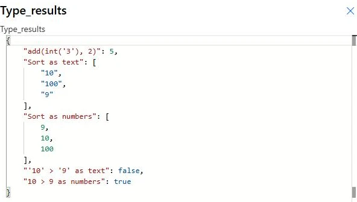
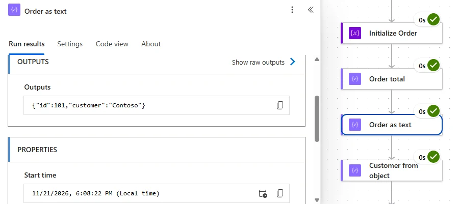
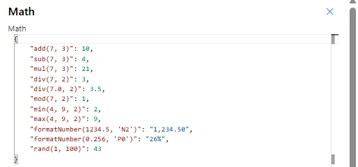

- Power Automate
- Level 1 · Foundations · 4 of 7
Data types and conversions: the complete guide
Every value has a type, and functions only accept certain types. Most errors beginners hit, such as expects an integer … provided value is of type 'String', are type problems. Others are worse: no error, just a wrong answer, because text that looks like a number is sorted and compared as text.
| Section | You'll learn |
|---|---|
| 1 · The six types | What each looks like, with the demo's values |
| 2 · Text that looks like a number | Sorting and comparing: the silent wrong answer |
| 3 · Converting | int, float, string, bool, json |
| 4 · Objects | Reading fields, and turning objects into text |
| 5 · Math | Each function's result and trap |
| 6 · Base64 | Why file content looks strange |
1 · The six types
One order, six types
| Type | Example | In JSON | Variable type to pick |
|---|---|---|---|
| String (text) | Laptop | "Laptop" | String |
| Integer | 3 | 3 | Integer |
| Float (decimal) | 49.99 | 49.99 | Float |
| Boolean | true | true | Boolean |
| Array (list) | ["hardware","office"] | [ … ] | Array |
| Object (record) | {"id":101,"customer":"Contoso"} | { … } | Object |
The quotes matter. 3 is a number; "3" is text. SharePoint, Excel, forms and HTTP responses often send numbers as text.
2 · Text that looks like a number
The Data types scope
| Expression | Result | Why |
|---|---|---|
sort(createArray('10', '9', '100')) | ["10","100","9"] | As text, “1” comes before “9” |
sort(createArray(10, 9, 100)) | [9,10,100] | Numbers sort by size |
greater('10', '9') | false | “1” is less than “9” as text |
greater(int('10'), int('9')) | true | Converted first |
add(int('3'), 2) | 5 | Converted first |
add(outputs('Quantity_as_text'), 2) | fails | add refuses text |

The one that does fail tells you the type it got:
The template language function 'add' expects its first parameter to be an integer,
a float or a decimal number. The provided value is of type 'String'.Rule of thumb
int() or float()3 · Converting between types
| Function | From → to | Example | Fails when |
|---|---|---|---|
int(x) | text → whole number | int('42') → 42 | the text has decimals or letters: int('4.5') |
float(x) | text → decimal | float('49.99') → 49.99 | letters, or a comma decimal like '49,99' |
string(x) | anything → text | string(3) → "3" | never |
bool(x) | text/number → true/false | bool('true'), bool(1) | 'yes' |
json(x) | JSON text → object/array | json('[1,2]') | the text isn't valid JSON |
array(x) | one value → list of one | array('a') → ["a"] | never |
createArray(a, b, …) | values → list | createArray(1, 2) | never |
Converting a price that arrives as text
float(…) → 49.99mul(…, 3) → 149.97formatNumber(…, 'N2') → "149.97" (text again, for display)4 · Objects: reading fields and turning them into text
variables('Order')?['customer']| Piece | What it does |
|---|---|
variables('Order') | The whole object. |
?['customer'] | One field: Contoso; null if it's missing. |

string() turns an object into JSON text, for logging or sending in an email.json() goes the other way: text in, object out. You need it when a field holds JSON as text (an AI response, a SharePoint multi-line column). Calling json() on something that's already an object fails.
5 · Math functions
Flows calculate with functions, not + - * /.

Each result, and its trap
| Function | Result | Watch out |
|---|---|---|
add(7,3) · sub · mul | 10421 | Text inputs must be converted first |
div(7, 2) | 3 | Two whole numbers give a whole number |
div(7.0, 2) | 3.5 | Make one side decimal (float()) |
mod(7, 2) | 1 | Remainder; 0 means even |
min / max | 29 | Also accept one list |
formatNumber(1234.5,'N2') | 1,234.50 | Returns text: format last |
rand(1, 100) | 43 | The top number is never returned |
6 · Base64: why files look strange
Text → Base64 → text
base64('Hello Contoso')base64ToString(…) → "Hello Contoso"
File content arrives as {"$content-type": …, "$content": "…Base64…"}. Pass it whole to the action that saves or sends the file; you rarely decode it. Base64 is not encryption.
Watch out
- A variable's type is fixed when it's initialized.
- Number formats with commas (
1,234) or a decimal comma (49,99) must be cleaned withreplacebeforefloat. - Compare dates as dates, not text in different formats (see Dates).
New to this? Start from the basics optional
JSON: the text format flows use for data: { } object, [ ] list, text in double quotes.
Common mistakes
- Sorting or filtering numbers that are stored as text.
- Expecting
div(7, 2)to be 3.5. - Formatting before calculating.
json()on an object.